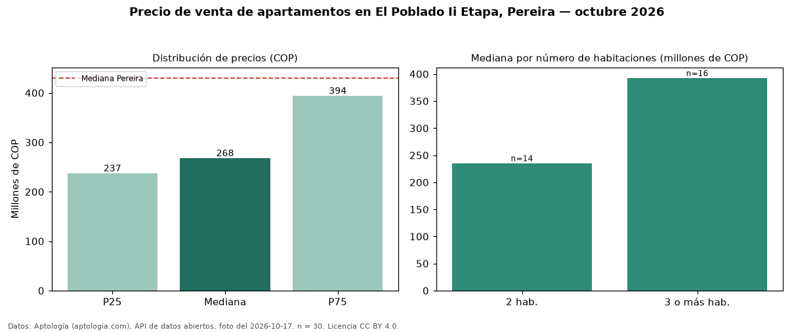

Precio de venta de apartamentos en El Poblado Ii Etapa, Pereira — octubre 2026
Con 30 avisos vigentes, el precio mediano de apartamentos en venta en El Poblado Ii Etapa, Pereira es COP 268 millones. Comparado con la mediana de la ciudad, COP 430 millones, la diferencia es de 38 % por debajo. Por mediana, es el puesto 31 de 32 barrios de Pereira con al menos 30 avisos de apartamentos en venta: entre los más económicos. El segmento con más oferta es el de 3 o más habitaciones (16 avisos, mediana COP 392 millones); pasar de 2 habitaciones a 3 o más habitaciones sube la mediana 67 %. 77 % de los avisos incluye parqueadero, y su mediana (COP 330 millones) está 23 % por encima de la general. La dispersión es moderada: el cuartil superior (COP 394 millones) es 1,7 veces el inferior (COP 237 millones). El aviso más barato pide COP 210 millones y el más caro COP 430 millones. Datos: Aptología (aptologia.com), API de datos abiertos, licencia CC BY 4.0 — https://www.aptologia.com/venta/pereira/el-poblado-ii-etapa. Archivos: PDF de 2 páginas, CSV con las cifras y gráfica PNG.

| Avisos únicos | 30 |
|---|---|
| Percentil 25 | COP 237.000.000 |
| Mediana | COP 267.500.000 |
| Percentil 75 | COP 393.750.000 |
Fuente: avisos vigentes de portales inmobiliarios recopilados por Aptología, deduplicados (mínimo 30 avisos únicos por celda). Precios pedidos, no cerrados. Fecha: 2026-10-18.